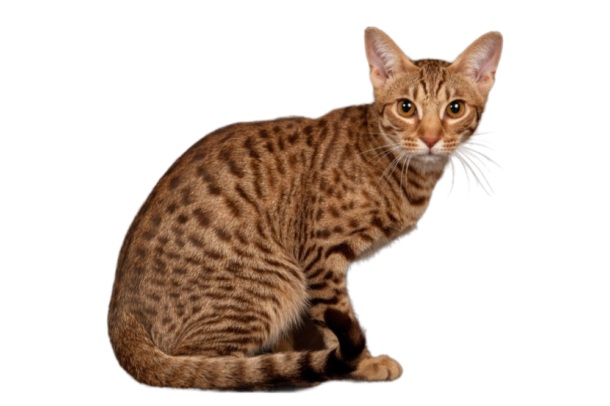

|

แมวพันธุ์นี้มีขนาดกลางถึงใหญ่ และมีลายจุดเฉพาะตัวของสายพันธุ์ ส่วนอกจะยุบแต่กว้าง มีขาแข็งแรงและกล้ามเนื้อเป็นทรวดทรงงดงาม ส่วนหัวเป็นทรงสามเหลี่ยมกลับหัวแต่ก็มีขากรรไกร “เหลี่ยม” ด้วย ใบหูมีลักษณะใหญ่ กว้างและมีกระจุกขน หลายคนจึงนึกว่าแมวพันธุ์นี้มีนิสัย “ดุร้าย” อ็อกซี่แคทมีขนสั้นและละเอียดเหมือนผ้าซาติน ส่วนลวดลายจุดที่เป็นเอกลักษณ์ของสายพันธุ์นี้จะกระจายเป็นระเบียบไปทั่วลำตัวด้านข้าง หัวไหล่และสะโพก ต่อเนื่องไปจนถึงขาและส่วนท้อง ส่วนหน้าผากจะมีลายตัวอักษรเอ็ม (M) ที่เป็นเอกลักษณ์ชัดเจน ส่วนหางจะมีจุดสลับกับวงกลมสีเข้มไปจนสุดปลายหาง แมวพันธุ์อ็อกซี่แคทมีหลายสี
|